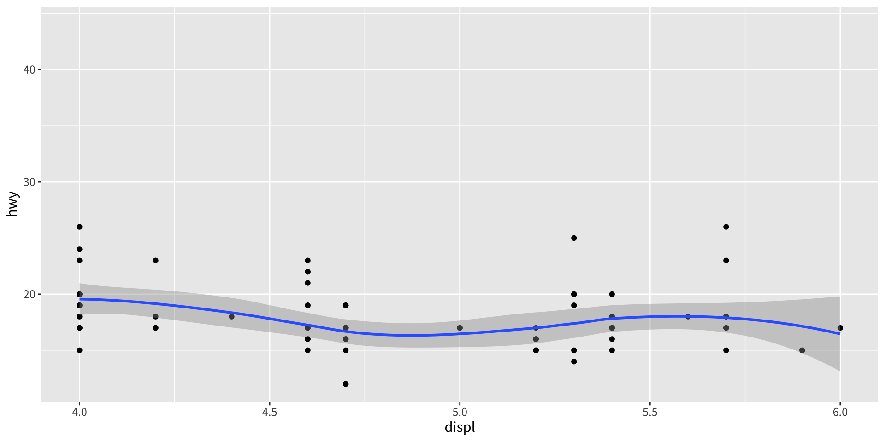
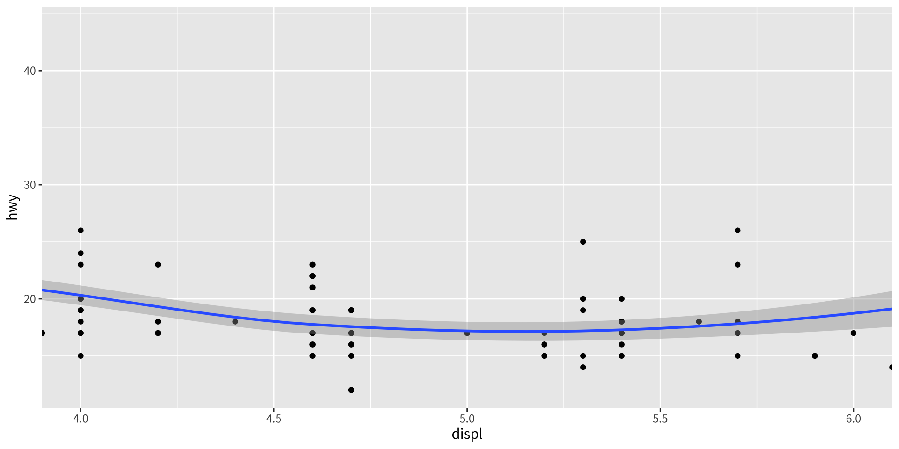
第十五章：座標系統
實踐大學
2026-06-05
座標系統有兩項主要工作。其一，把兩個位置美學結合成圖上的 2D 位置——x 與 y 或許更該叫「位置 1」與「位置 2」，因為它們的意義取決於座標系統（極座標中是角度與半徑、地圖中是緯度與經度）。其二，與分面器協作，繪製軸與面板背景。
座標系統有兩大類：
coord_cartesian()、coord_flip()、coord_fixed()coord_polar()、coord_trans()、coord_map() / coord_quickmap() / coord_sf()coord_cartesian() 縮放coord_cartesian() 接受 xlim 與 ylim。既然尺度已有 limits 引數，為何還需要它們？差別很根本：
每當涉及 stat（如平滑器）時這就很重要：縮放保留配適，而裁切尺度則對倖存的資料重新配適。


中間面板會警告有列被移除、且平滑線在一小片資料上重新配適；右面板保留原始配適、僅放大。
coord_flip() 翻轉多數 stat 假設你想要 y 對 x 的條件關係。要交換兩者的角色——或只是旋轉 90°——用 coord_flip()。這與單純交換變數不同，因為 stat 是對原始資料配適，再把輸出旋轉：
coord_fixed() 等比例coord_fixed() 固定 x 與 y 軸上實體長度之間的比例。預設的 ratio = 1 保證 x 軸上 1 公分所跨的資料範圍，等於 y 軸上 1 公分所跨的範圍，且無論輸出裝置形狀如何都維持此映射。
與線性座標不同，非線性座標可改變 geom 的形狀——矩形變成弧、兩點間最短路徑未必是直線：
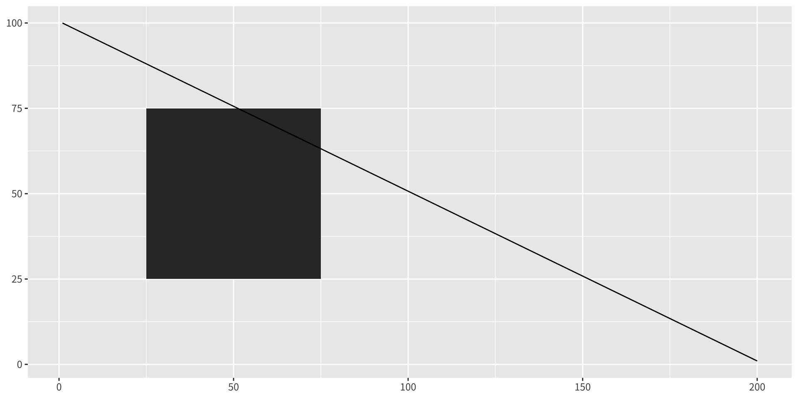
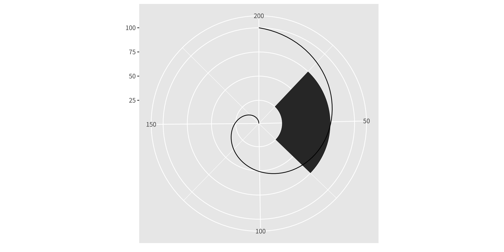
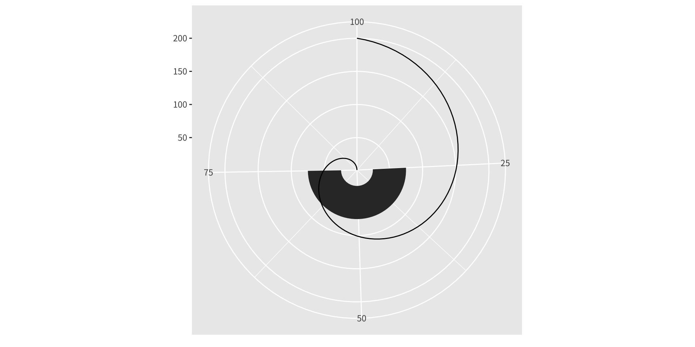
ggplot2 如何轉換形狀？分兩步。首先它把每個 geom 重新參數化為純位置式的形式（長條的高與寬變成四角多邊形）。其次它把每個位置轉換到新系統。
點很容易——點在哪裡都還是點。線與多邊形很難，因為直線可能彎曲。假設轉換是平滑的，ggplot2 把長線打散成許多短段、逐段轉換。這稱為切細（munching）：
df <- data.frame(r = c(0, 1), theta = c(0, 3 / 2 * pi))
interp <- function(rng, n) seq(rng[1], rng[2], length = n)
munched <- data.frame(r = interp(df$r, 15), theta = interp(df$theta, 15))
transformed <- transform(munched, x = r * sin(theta), y = r * cos(theta))
ggplot(transformed, aes(x, y)) +
geom_path() + geom_point(size = 2, colour = "red") + coord_fixed()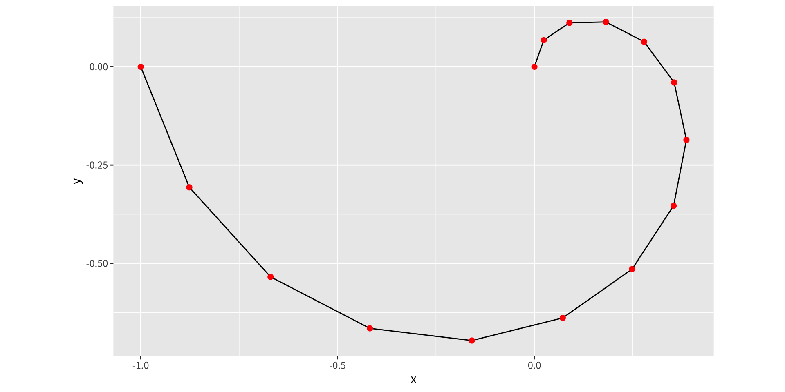
coord_trans()如同界限，轉換可在兩處作用。在尺度層級，它發生在 stat 之前、不改變 geom 形狀；在座標層級，它發生在 stat 之後、會改變形狀。兩者並用，可讓你在轉換後的尺度上建模、再反轉換以利詮釋：
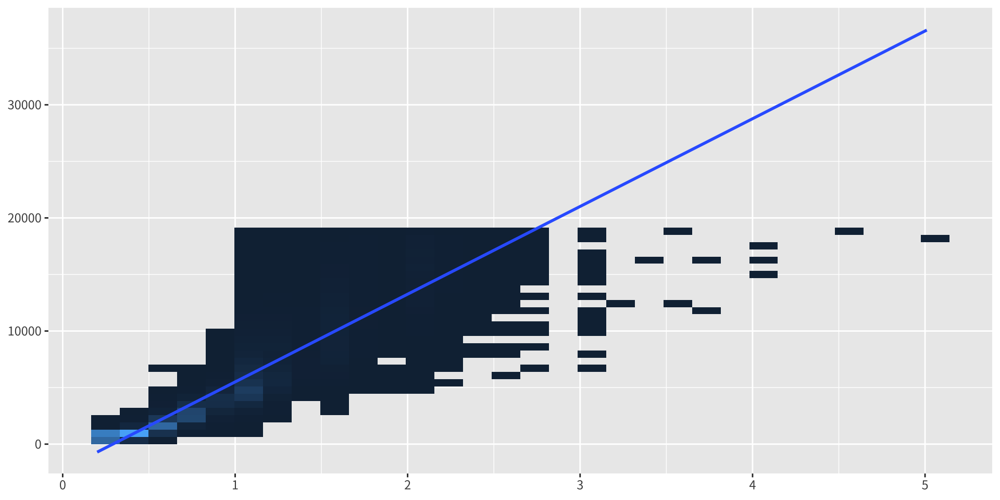
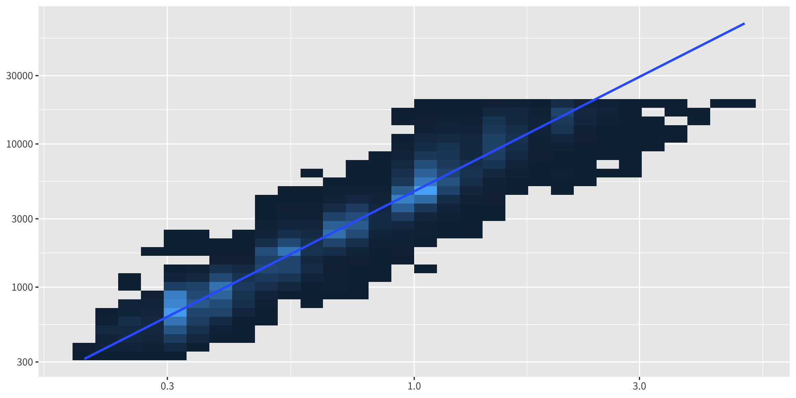
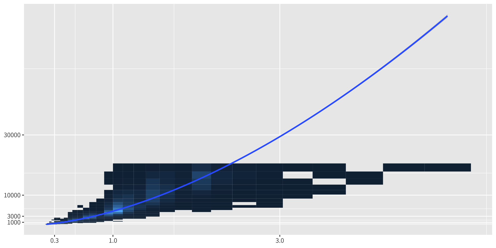
coord_polar()極座標把長條 geom 變成圓餅圖與靶心圖，把線 geom 變成雷達圖。theta 引數選擇哪個位置映射到角度。要小心：角度比長度更難知覺，尤其在小半徑處。
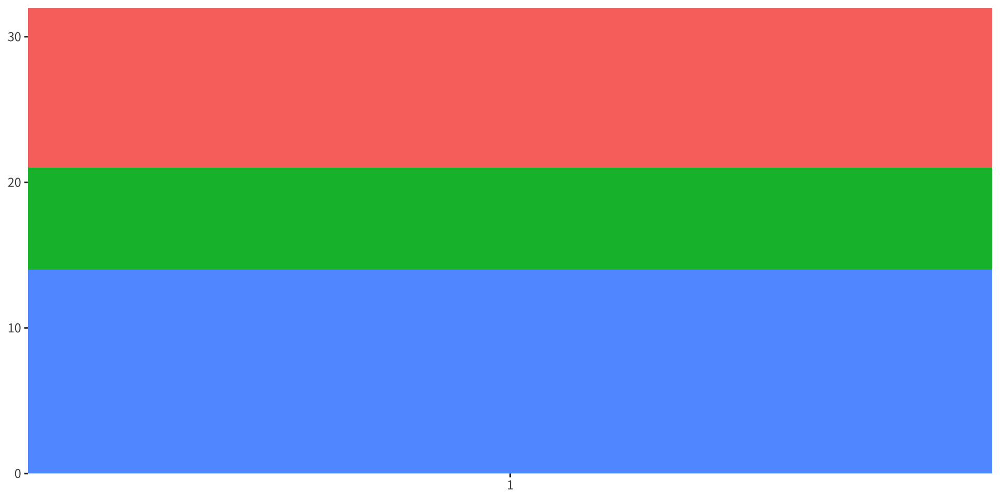
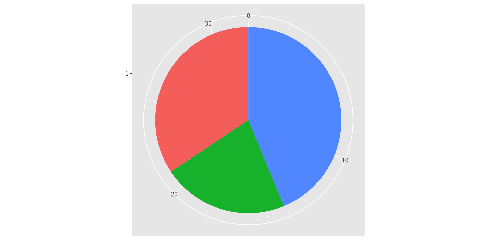
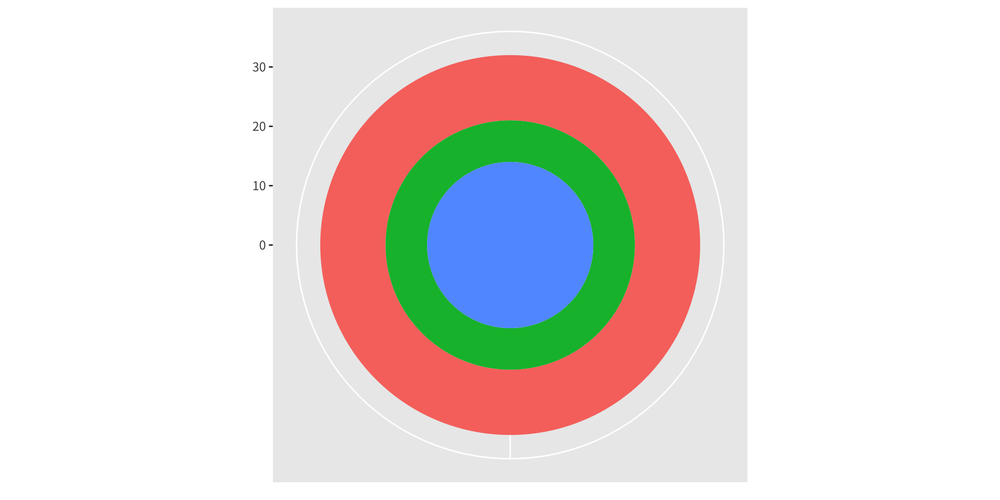
地圖顯示的是球面資料，因此直接畫原始經緯度會誤導——你必須投影。ggplot2 提供兩種做法：
coord_quickmap()——快速近似，固定長寬比使圖中央處 1° 緯度與 1° 經度相等。適合小區域。coord_map()——透過 mapproj 套件做正式投影，引數與 mapproj::mapproject() 相同。較慢，因為它必須切細並轉換每一片。練習
在含 geom_smooth() 的 mpg 散佈圖上，對比 scale_x_continuous(limits = c(4, 6)) 與 coord_cartesian(xlim = c(4, 6))。為什麼兩條平滑線不同？
建立一張 displ vs cty 帶平滑線的圖，再用 coord_flip() 旋轉它。這與交換 x、y 映射有何不同？
在散佈圖上用 coord_fixed()。預設的 ratio = 1 提供什麼保證？
用 coord_polar() 把 mtcars 的 cyl 堆疊長條變成圓餅圖與靶心圖。為什麼圓餅圖在知覺上較弱？
重現 diamonds 的反轉換範例：在對數尺度上配適線性模型，再用 coord_trans() 搭配 scales::exp_trans(10) 回到原始軸。這對大克拉鑽石揭示了什麼？
用你自己的話解釋「切細（munching）」。為什麼點容易轉換，而線與多邊形困難？
分別在笛卡兒座標與 coord_quickmap() 下繪製紐西蘭地圖。何時你會寧願付出代價使用 coord_map()？
版權聲明。 本教材改編自 ggplot2: Elegant Graphics for Data Analysis (3e)。所有權利均由原作者與出版者保留。
僅供非商業用途。 本教材嚴格限定用於教育目的，不得用於商業獲利。
適當標註出處。 任何對本教材的重製、散布或使用，都必須適當標註原始出處。
ggplot2: Elegant Graphics for Data Analysis